Ending FGM:Protecting the Rights and Health of girls.
"The health sector has an essential role in preventing FGM, health workers must be agents for change rather than perpetrators of this harmful practice and must also provide high quality medical care for those suffering its effects."
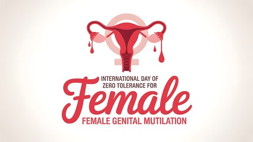
Female genital mutilation is a severe violation of girl's rights and critically endangers their health,” said Dr Pascale Allotey, WHO's Director for Sexual and Reproductive Health and Research, and the United Nations Special Programme for Human Reproduction (HRP). “The health sector has an essential role in preventing FGM health workers must be agents for change rather than perpetrators of this harmful practice, and must also provide high quality medical care for those suffering its effects.” Typically carried out on young girls before they reach puberty, FGM includes all procedures that remove or injure parts of the female genitalia for non-medical reasons. Evidence shows that no matter who performs FGM, it causes harm. Some studies suggest it can even be more dangerous when performed by health workers, since it can result in deeper, more severe cuts. Its “medicalization” also risks unintentionally legitimizing the practice and may thereby jeopardize broader efforts to abandon the practice. For these reasons, WHO's new guideline recommends professional codes of conduct that expressly prohibit health workers from performing FGM. Secondly, recognizing their respected role within communities, it emphasises the need to positively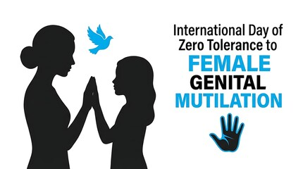
engage and train health workers for prevention. Sensitive communication approaches can help health workers effectively decline requests to perform FGM, while informing people about its serious immediate and long-term risks. “Research shows that health workers can be influential opinion leaders in changing attitudes on FGM, and play a crucial role in its prevention,” said Christina Pallitto, Scientist at WHO and HRP who led the development of the new guideline. “Engaging doctors, nurses and midwives should be a key element in FGM prevention and response, as countries seek to end the practice and protect the health of women and girls.” Alongside effective laws and policies, the guideline highlights the need for community education and information. Community awareness-raising activities that involve men and boys can be effective in increasing knowledge about FGM, promoting girl's rights, and supporting attitudinal changes. In addition to prevention, the guideline includes several clinical recommendations to help ensure access to empathetic, high quality medical care for FGM survivors. Given the extent of both short and long-term health issues that result from the practice, survivors may need a range of health services at different life stages, from mental health care to management of obstetric risks and, where appropriate, surgical repairs. Evidence shows that, with the right commitment and support, it is possible to end FGM. Countries like Burkina Faso, Sierra Leone and Ethiopia have seen reductions in prevalence among 15 to 19-year-olds over the past 30 years by as much as 50%, 35% and 30% respectively, through collective action and political commitment to enforce bans and accelerate prevention. Since 1990, the likelihood of a girl undergoing genital mutilation has decreased by threefold. However, it remains common in some 30 countries around the world, and an estimated 4 million girls each year are still at risk.
Female genital mutilation in Kenya,This article is more than 11 years old.
About 140 million girls around the world are living with the consequences of FGM.
Kenya has banned the practice but it remains prevalent in some communities. Reuters photographer Siegfried Modola gained rare access to a ceremony.
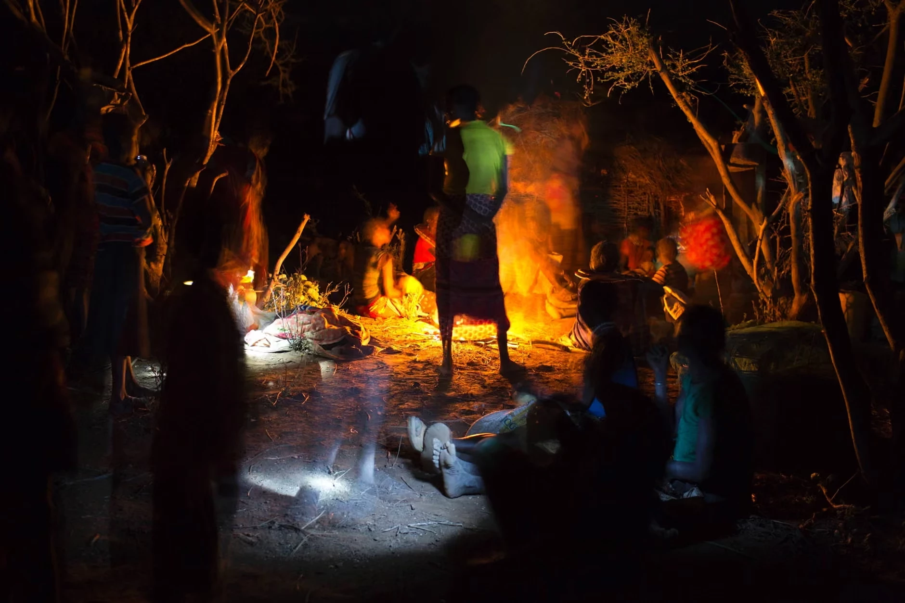
1. The Gathering
Members of the Pokot tribe gather round a fire the evening before the ceremony
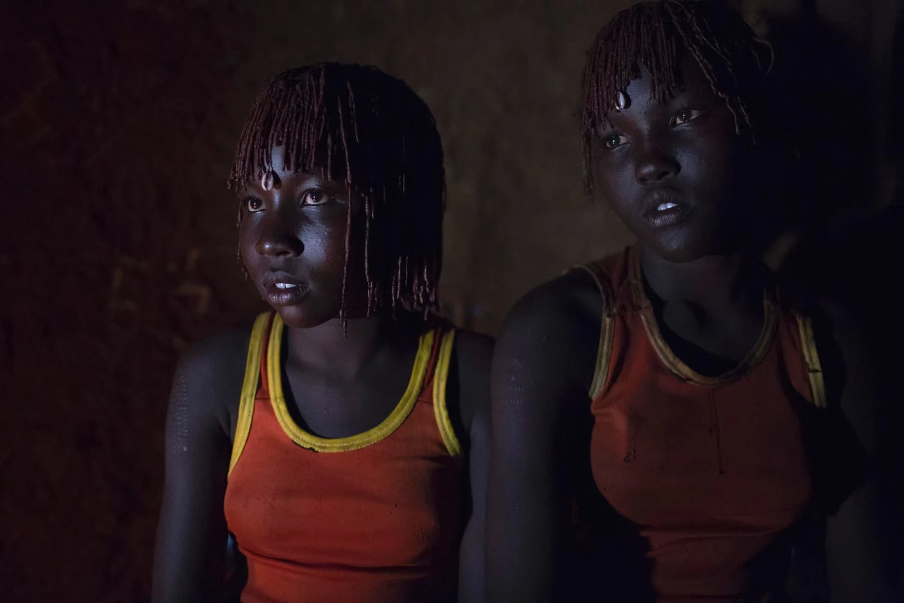
2. Community Norm
FGM is still integral to some communities where girls who don't get cut risk facing stigma and alienation
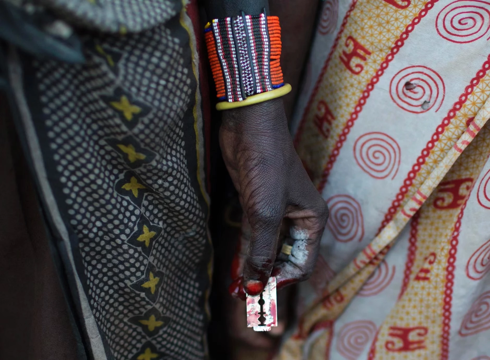
3. Harmful Practice
A woman holds a razor blade after performing a mutilation. Girls who undergo FGM are at heightened risk of infection, prolonged bleeding and infertility
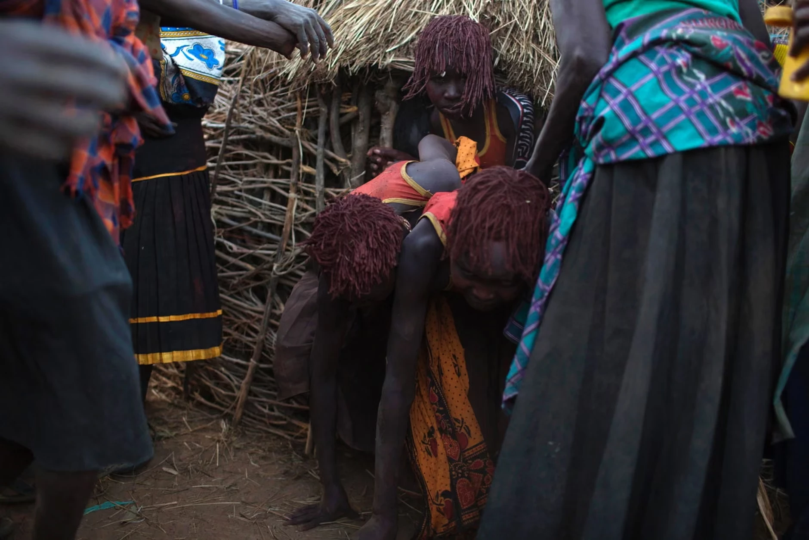
4. The Night Before
The girls wait together the night before they will be subject to the procedure
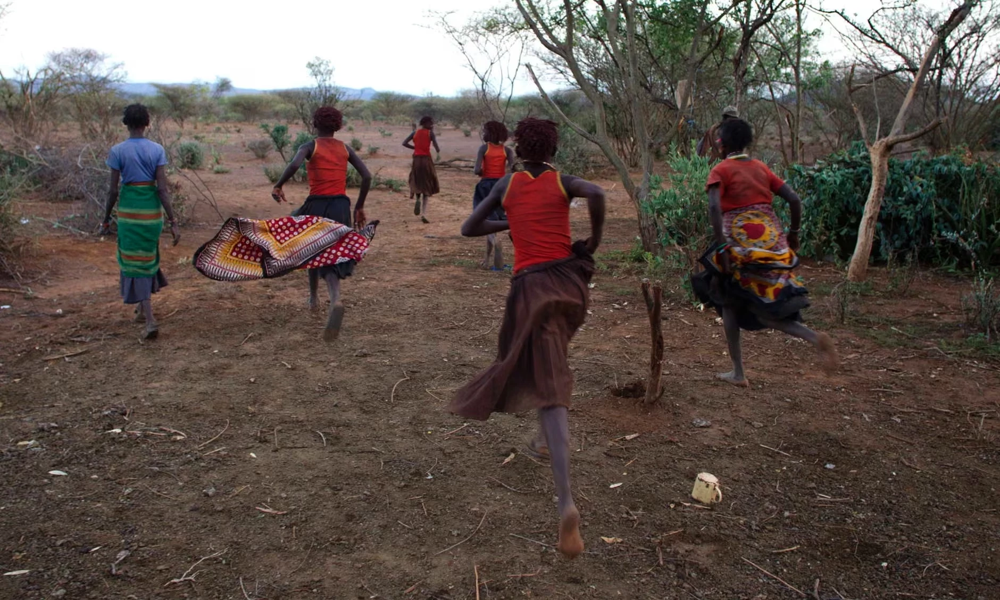
5. The Day of Ceremony
The girls on the day of the mutilation. Kenya's new prosecution unit has said a recent crackdown means parents are taking their daughters to more remote regions to undergo FGM
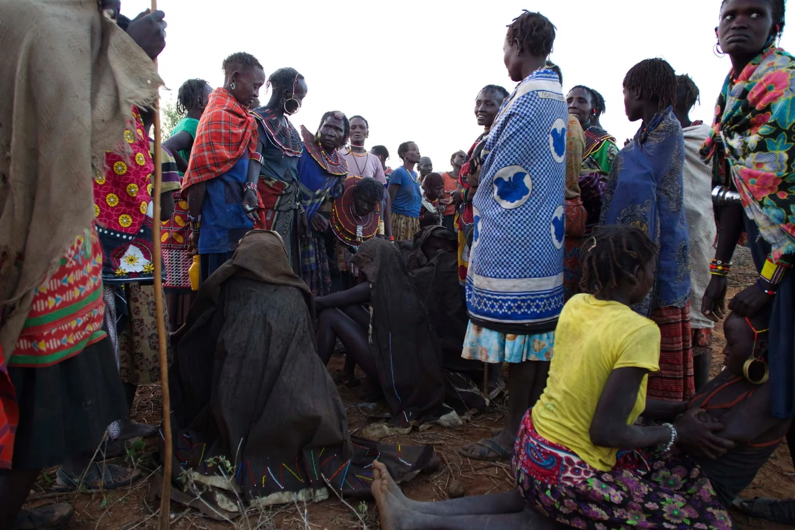
6. Departure
The girls leave their homes and make their way to the place where they will undress and wash during their ceremony
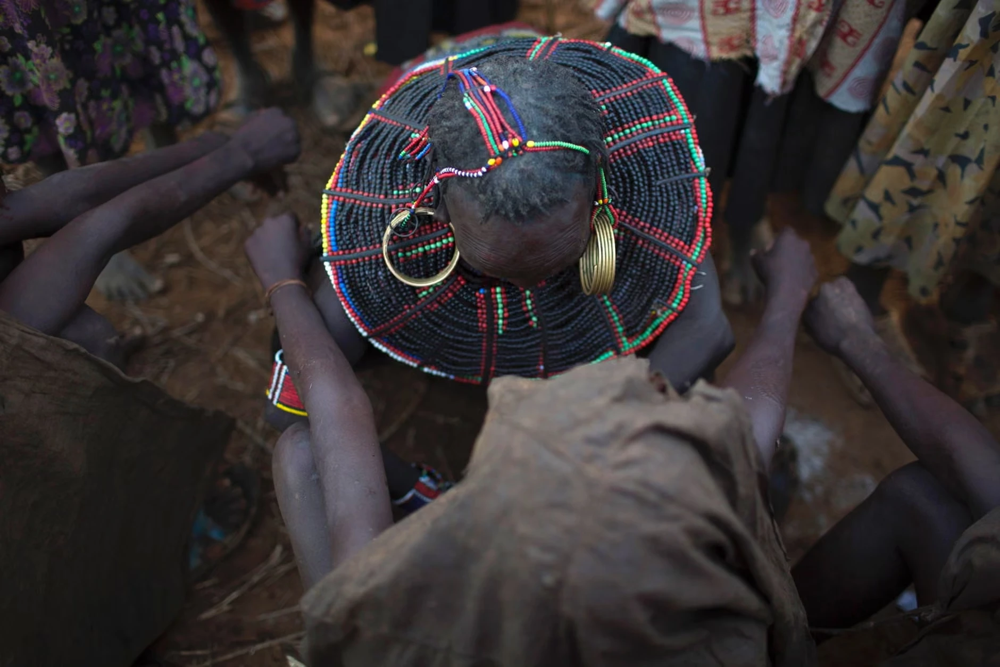
7. After the Procedure
Covered in animal skins, the girls squat on rocks after and wait

8. The Procedure
A woman performs FGM on a girl, a practice that has devastating health consequences
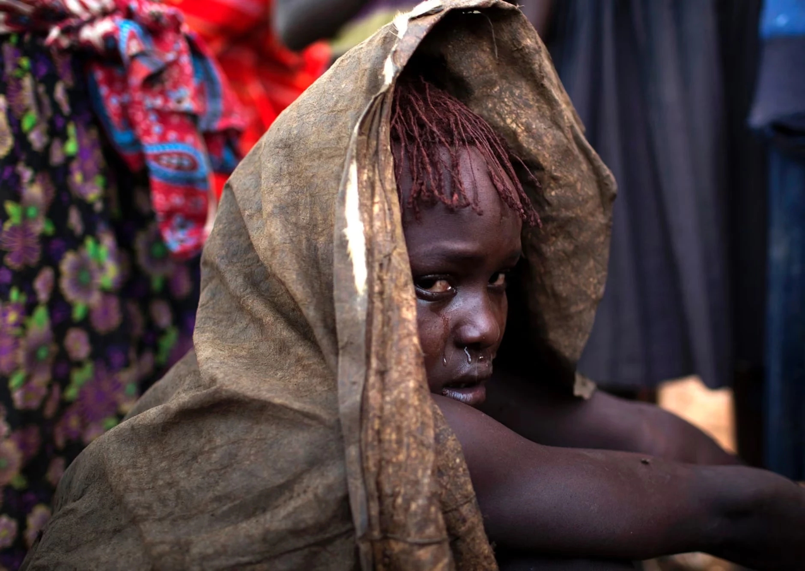
9. Persistent Traditions
FGM is still integral to some communities where girls who don't get cut risk facing stigma and alienation
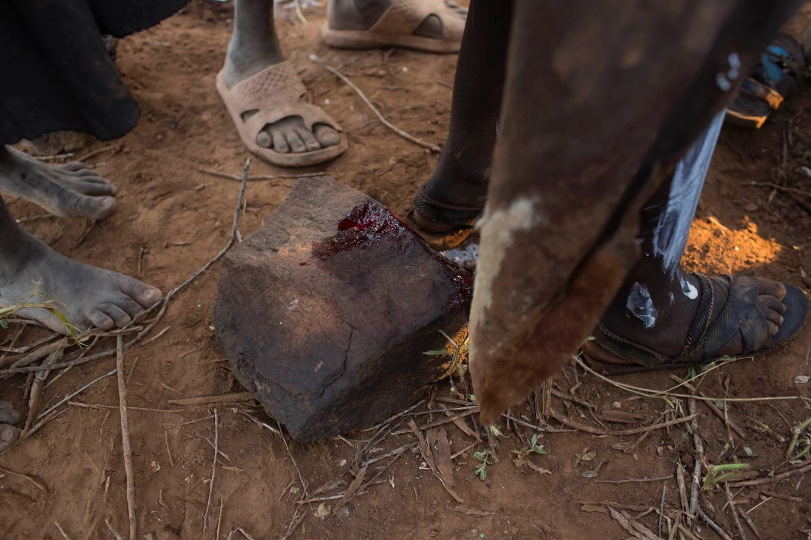
10. The Cost
A girl bleeds onto a rock after being cut. The immediate physical consequences are severe and long-lasting
In 2026 alone, an estimated 4.5 million girls many under the age of five are at risk of undergoing female genital mutilation (FGM). Currently, more than 230 million girls and women are living with its lifelong consequences. Today, on the International Day of Zero Tolerance for Female Genital Mutilation, we reaffirm our commitment to end female genital mutilation for every girl and every woman at risk, and to continue working to ensure those subjected to this harmful practice have access to quality and appropriate services. Female genital mutilation is a violation of human rights and cannot be justified on any grounds. It compromises girls and women's physical and mental health and can lead to serious, lifelong complications, with treatment costs estimated at about US$ 1.4 billion every year. Interventions aimed at ending female genital mutilation over the last three decades are having an impact, with nearly two-thirds of the population in countries where it is prevalent expressing support for its elimination. After decades of slow change, progress against female genital mutilation is accelerating: half of all gains since 1990 were achieved in the past decade reducing the number of girls subjected to FGM from one in two to one in three. We need to build on this momentum and speed up progress to meet the Sustainable Development Goal target of ending female genital mutilation by 2030.
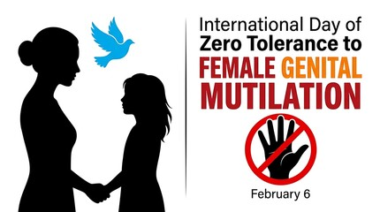
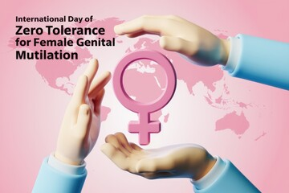
We know what works. Health education, engaging religious and community leaders, parents and health workers and the use of traditional and social media are effective strategies to end the practice. We must invest in community-led movements including grassroots and youth networks and strengthen education through both formal and community-based approaches. We need to amplify prevention messages by involving trusted opinion leaders, including health workers. And we must support survivors by ensuring they have access to comprehensive, context-tailored health care, psychosocial support, and legal assistance. Every dollar invested in ending female genital mutilation yields a tenfold return. An investment of US$ 2.8 billion can prevent 20 million cases and generate US$ 28 billion in investment returns. As we approach 2030, gains achieved over decades are at risk as global investment and support wane. Funding cuts and declining international investment in health, education, and child protection programmes are already constraining efforts to prevent female genital mutilation and support survivors. Further, the growing systematic pushback on efforts to end female genital mutilation, compounded by dangerous arguments that it is acceptable when carried out by doctors or health workers, adds more hurdles to elimination efforts. Without adequate and predictable financing, community outreach programmes risk being scaled back, frontline services weakened, and progress reversed placing millions more girls at risk at a critical moment in the push to meet the 2030 target. Today we reaffirm our commitment and efforts with local and global public and private partners, including survivors, to end female genital mutilation once and for all.